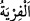

“
” yalan demektir. “
” aynı kökten daha önceden olmamış/görülmemiş veya
büyük bir iş anlamındadır. Yapıldığında şaşkınlık veren şey için kullanılır. el-Ahterî’de
bu kelimenin zıt anlamlı kelimelerden olduğu, hem iyilik hem de kötülük anlamına
geldiği ifâde edilmiştir.
Kâşifî şöyle der: “(Ey Meryem!) Ev halkı arasında bir benzeri asla vâki olmamış
çirkin bir iş yaptın.”
28. “Ey Harun’un kız kardeşi, baban kötü bir adam değildi, annen de fâhişe
değildi (sen ne yaptın böyle dediler?)”
“Ey Harun’un kız kardeşi!” Peygamber Efendimiz (a.s.)’dan rivâyet edildiğine göre
onlar bu sözleriyle Harun peygamberi (a.s.) kasdetmişlerdir. Çünkü Meryem, Harun
(a.s.)’ın kardeşi derecesindeki kimselerin neslindendi. Bu da Meryem’in, Harun
(a.s.)’ın kız veya erkek kardeşinin neslinden olması ile mümkün olur. Yoksa Harun ile
Meryem arasında bin sekiz yüz sene vardı. Hârun’un Hz. Meryem’in baba bir kardeşi ve
sâlih bir kimse olduğu da söylenmiştir. Yine Harun’un Musa (a.s.)’ ın kardeşi olduğu
söylenmiştir. Hz. Meryem Musa (a.s.)’ın neslinden olduğu için Harun’a kardeşi olarak
nisbet edilmiştir. Nitekim Araplar “Ey Arab’ın kardeşi” derlerdi. Bunun mânâsı,
onlardan (Araplardan) birisi demektir.
“Baban” İmrân “kötü bir adam değildi.” İbn Abbâs (r.anhümâ)’nın dediğine göre bu
sözün mânâsı, “Baban İmrân zinâkâr değildi.” demektir. Kâşifî ise şöyle der: “Senin
baban İmran kötü bir adam değildi. Bilakis o Mescid-i Aksâ ulemâsının en
şereflilerinden bir kimseydi, dediler.”
“Annen” Fâkuz kızı Hanne “de fâhişe değildi” yani o da zinâkâr bir kadın değildi.
Sen ne yaptın böyle?! Sen bu babasız çocuğu nereden aldın?! dediler. Bu ifâdeler Hz.
Meryem’in yaptığı bu işin onlar tarafından tuhaf ve hoş görülmeyen bir şey olduğunu
pekiştirmektedir. Ayrıca bu ifade, sâlih kimselerin çocuklarının zinâ ve benzeri
çirkinlikleri işlemesinin daha da çirkin bir şey olduğunu hatırlatmaktadır.
Bilesin ki Allah, her devirde bir peygamber veya velî getirip ona bir mûcize veya
kerâmet verdiğinde o devrin insanlarının çoğu tarafından bunun yadırganması
alışılagelmiş bir şeydir. O peygamber veya velîyi delilik, sapıklık, iftirâ, yalancılık,
sihirbazlık ve benzerlerine nisbet ederler. İnsanların az bir kısmı ise bilir ki çoğunluğun
bulunduğu yerden sefere çıkıp ayrılanlar, akılların alışık olmadığı ve gözlerin görmediği
garip bilgiler ve acâyip hallerle geri dönerler. İşte bu kimseler peygamberleri ve
velîleri reddetmeyip onlara inanırlar.
Mesnevî’de şöyle denilmiştir:
İçini sevgiliyi inkârdan arıt da,